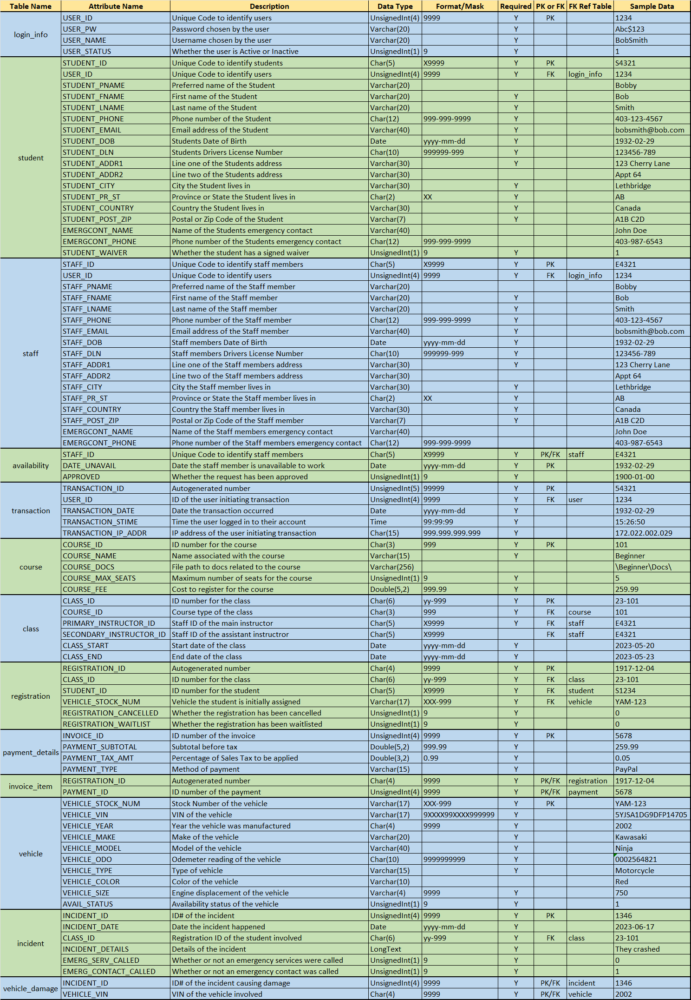

Database Design
SIT SOFTware (Students In Technology) was a team formed to complete the capstone project "Open Road" during the Systems Analysis and Design course. Open Road is an Information System created for the Precision Riding Academy in Lethbridge, Alberta. It is designed to allow Students to self-register for classes, and for Instructors and Administrators to manage all aspects of the Riding Academy.

A data dictionary written while planning the database for the Open Road project. It contains all pertinent information on every field in every table that is included in the database.